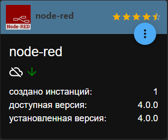

Создание умного дома с голосовым управлением от А до Я. Алиса и iobroker
Кликните, чтобы скопировать короткую ссылку на эту страницу
Перейти к навигацииПерейти к поиску
Создание умного дома с голосовым управлением от А до Я. Алиса и iobroker.
Черновая версия
Cтраница не завершена
Информация на этой странице не проверена до конца. Текст дорабатывается, обозначенные решения могут быть неполными или не совсем точными.
Внимание!!!
Я расскажу процесс сборки и настройки показывая его, со своей стороны, именно так, как делал это я. Так же, в некоторых местах, я разъясню очевидные вещи, что бы процесс был понятен даже новичкам, но учтите, что дальнейшая инструкция хоть и поможет вам установить всё с нуля, но вам в любом случае понадобятся хотя бы начальные азы знания программирования для настройки вашего будущего умного дома.
После просмотра фильма Железный человек, где показан голосовой помощник мистера Старка по имени JARVIS, меня не покидала мысль о создании такого голосового помощника у себя дома, я реализовывал различные варианты на Text to Spech от Google, и даже заказал для этого колонку Google Home mini когда она появилась в 2016 году, но как же я был разочарован, что Google не собираются делать русский язык в своей колонке, и мои идеи о разговоре со своим "Умным домом", я временно отложил.
И вот, в 2018 году, появилась Яндекс Станция с необыкновенным и умным голосовым помощником Алисой, и моя мечта "поговорить" с моим домом стала осуществимой.
Как же приятно сказать "Алиса я приехал", и ваш дом уже включает свет на парковке, и в прихожей, регулирует температуру в доме. Или "Алиса я проснулся", и мой голосовой помощник открывает мне шторы, и включает приятную музыку для пробуждения. Вариантов использования голосовых помощников невероятное множество, а количество поддерживаемых устройств с каждым днем растет, что не может меня не радовать!
В данной статье, я научу вас как сделать свой умный дом, а именно: Мы создадим свой сервер умного дома. Реализуем голосовое управление домом с помощью Яндекс станции и Алисы, создадим своего Telegram бота. По плану, я хочу научить вас:
Я буду использовать последнее программное обеспечение, которое доступно на момент написания статьи (конец 2022 года).
Звучит может и страшно, но, ничего сложного в этом нет, особенно если у вас есть некоторые навыки работы с компьютером. Сейчас, я подробно расскажу, как создать свой сервер ioBroker который будет управлять вашим умным домом.
Список оборудования:
Для создания своего сервера подойдет почти любой персональный компьютер или ноутбук, характеристики особо не важны, т.к. какой-либо нагрузки на компьютер во время работы не будет. Вы можете взять старый ПК, или купить не новый ноутбук. Конечно, потребуется не менее двух USB портов, хорошо если на компьютере будет установлен SSD диск, они работают на много быстрее обычных HDD, и ваш сервер будет работать намного лучше с новым диском, размер диска не важен.
Lenovo ideapad 100
Я буду использовать ноутбук Lenovo ideapad 100, 4Gb оперативной памяти, SSD диском на 120Gb.
Не рекомендую использовать ПК с 32ух битной архитектурой (x86, i386), т.к. многие новые программы, написанные для умного дома, делаются уже исключительно под x64 архитектурные процессоры. Сразу скажу, 32 битный компьютер в наше время ещё нужно поискать…
Ещё понадобиться две USB флешки размером не менее 1Gb, одна для записи образа системы, вторая (возможно понадобиться) для записи на неё необходимых дополнительных драйверов сетевой карты, которые могут понадобиться во время установки.
Так же, вам понадобиться интернет. У меня сервер установлен на даче, поэтому, я использовал роутер с поддержкой 4G модемов и модем Huawei с SIM картой Beeline. Роутер раздет интернет по Wi-Fi, а также имеется возможность подключиться к нему проводом.
Какую систему устанавливать, решать, конечно, вам, я рекомендую Debian или Ubuntu. Так же сервер можно развернуть и на базе Windows, но, в этой статье я покажу процесс установки и настройки сервера на базе DEBIAN 11. Я буду описывать процесс на сколько это возможно подробно что бы сэкономить ваше время, потому что, чтобы понять, и разобраться в сделанном, мне потребовалось очень много времени.
Создание загрузочной USB флешки
Нам понадобиться образ DEBIAN 11 с официального сайта Debian.org Страница выбора версий: https://www.debian.org/CD/http-ftp/index.ru.html «Официальные образы CD/DVD «стабильного» выпуска», CD, amd64 (для x64 битных систем. Я рекомендую debian-11.5.0-amd64-netinst.iso по этой ссылке (именно netinst версию, ибо с другой у меня возникали проблемы при установки некоторых пакетов уже после полной установки). А именно вот этот образ: https://cdimage.debian.org/debian-cd/current/amd64/iso-cd/debian-11.5.0-amd64-netinst.iso
Что бы сделать загрузочную флешку нам понадобиться программа Rufus https://rufus.ie/ru/ , я рекомендую именно эту программу, т.к. когда я записывал образ другими способами, система зависала у меня на начальном этапе установки.
Подключаем флешку, запускаем Rufus, выбираем вашу флешку в верхнем выпадающем списке, кнопкой ВЫБРАТЬ выбираем образ debian-11.5.0-amd64-netinst.iso и нажимаем СТАРТ. Программа задаст вам пару вопросов, на которые мы отвечаем утвердительно. А именно: записать в ISO-образ режиме; подгрузить дополнительные файлы syslinux; Файлы на накопителе будут уничтожены. Начнется процесс создания загрузочной флешки с Debian 11, который не займет более 5 минут.
Извлекаем флешку, и перебираемся к нашему новому домашнему серверному ПК, который ещё, конечно, не сервер, но очень хочет им стать.
Надеюсь, тот кто читает эту статью уже сталкивался с установкой Windows на свой компьютер, иначе, дальнейшие действия могут вызвать некоторые сложности.
Для начала задача запустить загрузку с установочной флешки. Обычно на ноутбуках или ПК, во время включения надо нажать кнопку F8, F9 или F12, откроется Boot menu, после чего выбрать флешку в списке и нажать Enter.
Мой процесс установки выглядел следующим образом:
После чего сразу столкнулся с проблемой отсутствия драйверов Reaktek для Wi-Fi сетевой карты. И эта проблема возникает у многих, кто использует ноутбук в качестве сервера.
А именно ошибка:
«Для работы некоторой имеющейся у вас аппаратуры требуются файлы с несвободной микропрограммой. Микропрограмма может быть загружена со сменного носителя, например с USB-накопителя или дискеты. Отсутствующие файлы микропрограммы: rtlwifi/rtl8188efw.bin Если у вас есть такой носитель, то вставьте его и продолжайте.»
Решается просто: берём подготовленную нами вторую USB флешку, и идем искать необходимые драйвера. Я просто набрал в Yandex “rtlwifi/rtl8188efw.bin” и без проблем нашел и скачал их на каком-то сайте. Положил файлы в корневой каталог, и подключил USB флешку, к серверу на который мы ставим Debian и нажал продолжить.
Далее:
Во время установки, вам могут предложить «выполнить установку в UEFI», соглашайтесь.
После, начнется установка базовой системы, которая займет около 3-5 минут.
Далее, начнется установка основных пакетов системы, что займет от 10 до 40 минут, в зависимости от скорости вашего интернет-соединения.
Определение локального IP адреса
Для начала вам необходимо определить IP адрес вашего сервера, это можно сделать в самой системе Debian, выбрав «Параметры, Wi-Fi», и нажав шестеренку рядом с названием вашей беспроводной сети» Смотрим Адрес iPv4, в моем случае это 192.168.1.63
Либо посмотреть в адмике вашего роутера. Другой компьютер с которого мы будем настраивать ваш сервер, должен находиться в той же Wi-Fi сети, что и сервер Debian, мы будем подключаться к нему по локальному IP адресу… Как сделать это из другого места я расскажу позже.
Дальнейшая работа с вашим сервером в основном будет производиться удаленно с другого компьютера, ещё будет пару нажатий, для настройки удаленного доступа (об этом чуть дальше).
Так же вам необходимо зафиксировать локальный IP адрес (сделать IP адрес вашего сервера постоянным), для этого надо настроить резервирование IP адреса на DHCP сервере в настройках роутера. Как зайти на роутер, и как сделать это… Для каждого роутера процесс может немного отличаться, так что воспользуйтесь инструкциями из интернета.
В будущем вам придется фиксировать адреса умных Wi-Fi устройств (станций, розеток, лампочек), что бы их локальные IP адреса не менялись при перезагрузке вашего оборудования, это важно, иначе, сначала всё будет работать отлично, но потом… сервер не сможет найти лампочку или розетку, и в момент торжественной презентации Умного дома вашей жене, у вас что то не сработает. :)
Настройка сервера производиться через терминал, можно использовать программу терминал на сервере DEBIAN, но я рекомендую настраивать сервер удаленно, т.е. с другого компьютера, это удобнее, быстрее, и ещё пригодиться в будущем, когда вы уберете ваш сервер по дальше, т.к. нужды лазать в него у вас не будет.
Для доступа к серверу мы будем использовать SSH клиент, я использовал PuTTY, т.к. он мне кажется наиболее простым и удобным. Скачиваем PuTTY с официального сайта https://www.putty.org/ и запускаем.
Вводим IP адрес сервера, выбираем SSH соединение, и подключаемся к серверу.
Авторизуемся сначала под пользователем smarthome
После вводим команду что бы переключиться на суперпользователя. Вводим пароль суперпользователя, и мы получили полный доступ к серверу.
su
Показать спойлер
Для начала установим файловую оболочку midnight commander (mc) и библиотеку curl
apt install -y mc curl
Показать спойлер
На всякий случай проверим и установим обновления системы и пакетов.
apt update & apt upgrade
Показать спойлер
На нашем сервере нам надо отключить гибернацию (уход в спящий режим), отключить отключение по кнопке, и при закрытии крышки экрана. Для этого используем следующие решения, которые я нашел в интернете (В вашем случае, для вашего «железа», возможно, понадобятся другие решения).
Отключаем демоны приостановки / сна / гибернации командой.
sudo systemctl mask sleep.target suspend.target hibernate.target hybrid-sleep.target
Показать спойлер
Так же отредактируем файл: /etc/systemd/logind.conf
Для этого запустим Midnight Commander выполнив команду.
mc
Управление с помощью стрелок, переключение между вкладок табуляцией. Находим файл /etc/systemd/logind.conf жмем F4 (редактировать), и выбираем редактор (я использую 2. /usr/bin/mcedit).
Показать спойлер
Меняем значения, которые отвечают за закрытие крышки и кнопки выключения и спящего режима. Убираем комментарий в нужных нам строках, и ставим значение ignore. Сервер ведь у нас должен работать 24 на 7, и что бы кто ни будь его случайно не выключил. Я вырубил всё что можно.
HandleLidSwitch=ignore
HandleLidSwitchDocked=ignore
Жмем «ESCAPE» и выбираем «Да» что бы сохранить файл. После чего, перезапускаем сервис logind что бы изменения вступили в силу.
sudo service systemd-logind restart
Ставим последний Nodejs и NPM
curl -fsSL https://deb.nodesource.com/setup_19.x | sudo -E bash -
sudo apt-get install -y nodejs
Показать спойлер
Проверяем, всё ли правильно установилось, версии node и npm. Если что то пошло не так, придется искать решения в интернете. Если вы установили ту версию Debian которую указал я, проблем возникнуть не должно.
node -v
npm -v
Показать спойлер
Устанавливаем систему умного дома ioBroker !
Во время установки будут установлены все необходимые для работы библиотеки.
curl -sL https://iobroker.net/install.sh | bash -
Показать спойлер
Удаленный доступ через AnyDesk
ioBroker установлен, и можно открыть web админку для управления вашим умным домом, но, давайте сделаем удаленный доступ к серверу, что бы мы могли подключиться к вашему серверу из любой точки мира!
В принципе если у вас есть выделенный IP адрес, то вам, просто необходимо пробросить порты в настройках роутера для доступа по SSH и доступа к адмике ioBroker и другим сервисам. А именно: надо открыть порты 22, 8081 и далее в будущем, соответствующие для других сервисов. После чего будете подключаться по внешнему IP адресу и управлять вашим сервером. В моем случае, я использую USB модем, SIM карту Beeline, в мобильной связи выделенных IP адресов вам никто не даст, и я решил подключаться к своей «умной даче» через программу AnyDesk. (Аналог TeamViewer и подобных программ).
Что бы установить AnyDesk на ваш Debain сервер, используем следующие команды:
wget -qO - https://keys.anydesk.com/repos/DEB-GPG-KEY | sudo apt-key add –
По умолчанию AnyDesk недоступен в репозиториях Debian. Теперь мы добавляем репозиторий AnyDesk в вашу систему:
echo "deb http://deb.anydesk.com/ all main" | sudo tee /etc/apt/sources.list.d/anydesk-stable.list
И запускаем установку AnyDesk
apt update & apt install -y anydesk
Показать спойлер
Перезагружаем сервер
sudo reboot
Пока наш «умный дом» перезагружается, ставим AnyDesk на ПК на с помощью которого мы будем сейчас подключаться к серверу, чтобы проверить работу AnyDesk и настроить неконтролируемый удаленный доступ.
Сервер загрузился? На сервере авторизуемся. На ПК, с которого производим настройку запускаем AnyDesk, и видим наш сервер умного дома, и ключ для подключения. Запишите его, чтобы иметь удаленный доступ, когда он вам понадобиться. Так же ключ можно посмотреть на самом сервере Debian, для этого вам надо в программах найти AnyDesk и запустить его, после чего в верхней части она программы вы увидите ключ для подключения.
Настройка неконтролируемого доступа

Теперь надо настроить «Неконтролируемый доступ» к серверу, т.к. при подключении через AnyDesk, потребуется подтверждение входа на сервере, а это нам не нужно… Мы же собираемся убрать его в шкаф, и больше никогда не доставать. :)
Действия производим прямо на сервере.
display_server_not_supported
Подключаемся по ID к серверу. И тут вы можете столкнуться с ошибкой, если нет, пропустите этот абзац. У меня же в AnyDesk появилась ошибка:
Соединение было завершено. '''display_server_not_supported'''
Используя PuTTY, Midnight Commander ищем на сервере файл /etc/gdm3/custom.conf или /etc/gdm3/daemon.conf. Нам надо включить автоматическую авторизацию убрав комментарий # и исправив строки:
WaylandEnable=false
AutomaticLoginEnable = true
AutomaticLogin = smarthome
После чего опять перезагружаем (sudo reboot) сервер, ждем после загрузки 1-2 минуты, пока загрузиться AnyDesk, и пробуем подключиться.
После успешного подключения, если вы видите окно с просьбой подтвердить вход на сервере. Значит неконтролируемый доступ настроен неправильно. Иначе вам будет предложено ввести пароль неконтролируемого доступа, который вы настроили выше.
Если всё удачно, мы увидим рабочий стол нашего Debian сервера. Такой доступ может понадобиться в некоторых случаях, либо для удаленного доступа в случае, если у вас нет выделенного IP.
Всё. Сервер можно убирать в шкаф, бойлерную, на чердак, или куда вам будет удобно, всё дальнейшее управление вы сможете производить удаленно с другого компьютера. На то он и сервер, чтобы работать постоянно, стабильно, и что бы на нем не играли соседские дети пришедшие к вашему ребенку в гости. :)
Вот и пришло время заняться настройкой системы умного дома ioBroker, ради которой мы так долго настраивали наш сервер.
В браузере, вводим http://192.168.1.63:8081 (соответственно вы вводите IP адрес вашего сервера, как его получить я писал выше).
Проходим первоначальную настройку ioBroker, даем или не даем согласие на сбор статистики, придумываем пароль для входа в систему, и проходим другие первоначальные настройки, после чего попадаем в админку.
Этапы настройки нашего умного дома будут выглядеть следующим образом:
Далле будет описан процесс подключения и настройки. Уверен что, на начальном этапе, всё то что использую я, вы использовать не будете. Но всё же, я опишу все аспекты, драйвера и настройки которые использую.
- Страницы: здесь появятся ссылки на админку и драйверы имеющие отдельные страницы. К примеру, если вы установите систему визуализации, систему создания графиков, то для этих модулей сделаны отдельные «админки», которые появятся в «страницах».
- Драйверы: в данном пункте мы будем устанавливать различные дополнения, к нашему умному дому, так называемые драйвера (к примеру, драйвер, редактора javascript или node-red, драйвер создания графиков, получение погоды, связь с умным домом Xiaomi и многое многое другое.) Так же, вы сможете ставить node скрипты прямо с GITHUB, но для этого надо будет ещё немного изучить систему.
- Настройки: здесь вы увидите уже установленные драйвера, изначально admin.0 (админка ioBroker), backitup.0 (Модуль автоматического резервного копирования всей системы ioBroker, (я к примеру настроил автоматическое копирование на мой Google Drive), discovery.0 (Драйвер поиска новых устройств). Цифра в названии драйвера, это номер инстанции, т.е. вы можете установить одинаковых драйверов (к примеру, несколько админок). Так же здесь находятся настройки драйверов (Гаечный ключ рядом с каждым драйвером). К примеру, настройки резервного копирования, настройки админки и прочего.
- Объекты: очень важный пункт админки, в нем вы найдете все переменные вашего умного дома, информацию о подключенных устройствах, состояния, информацию из установленных драйверов и т.п.
- Категории: тут мы настроим комнаты дома, а также, категории и функции устройств. Это понадобиться для того, чтобы вы, и ваши умные помощники (Яндекс станция и Алиса) разбирались чем мы управляем (свет, розетка, температура), и в какой комнате (Зал, спальня, бойлерная, улица) и т.п.
- Журнал – не маловажный раздел, в нем можно видеть логи драйверов, адмики, ваших программ, которые вы в будущем напишите. Я постоянно заглядываю сюда для отладки своих javascript скриптов.
- Пользователи: можно создать других пользователей админки с ограниченными правами, я не пользуюсь данной функцией.
- Серверы: тут информация о вашем Debian сервере. Загрузка процессора и памяти, а также обновление сервера. Я использую данное меню редко, в основном, когда выйдет глобальное обновление ioBroker что бы обновить сервер.
- Файлы: Файловый менеджер, я его не использовал.
- Резервное копирование: «Админка» драйвера backitup, где вы можете сделать или восстановить резервную копию.
Т.к. я программирую на языке, javascript то, я покажу вам как делать это в ioBroker, постараюсь вам дать рабочие примеры программ, и рассказать, как всё работает в подробностях.
Установка дополнений производиться на вкладке "Драйверы". Что бы установить необходимый драйвер, введите его название в строке поиска, нажмите "+" и дождитесь установки. Там же можно удалить драйвер, или ознакомится с его документацией. Если во время установки у вас возникли проблемы, вы можете ознакомиться с логами установки на вкладке "Журнал". Я расскажу какие драйвера, для каких целей, и каким образом использую в своём умном доме.
Дополнительные драйвера ioBroker, которые нам понадобятся:
Следующие драйвера, для более продвинутых пользователей:
В случае успешной установки драйвера, в конце лога установки вы увидите строчку "Process exited with code 0". В некоторых случаях вы можете столкнуться с ошибками во время установки драйверов, такое бывает, все проблемы с ioBroker можно исправить через консоль, описание консольных команд ioBroker вы можете найти по этой ссылке. К примеру у меня возникли проблемы с установкой драйвера ZigBee, в конце установки я получал ошибку "ERROR: Process exited with code 25", что бы решить проблему с установкой, я подключился к серверу через SSH PuTTY и выполнил следующие команды:
iob stop
iob update
chown -R iobroker /opt/iobroker
curl -sL https://iobroker.net/fix.sh | bash -
iob upgrade
iob start
Показать спойлер
После перезапуска и исправления ioBroker, адаптер ZigBee установился без ошибок.
Если вдруг по каким то причинам, адаптер установить / удалить не удается. Вы можете использовать консольные команды iobroker:
iob add НазваниеАдаптера
iob delete НазваниеАдаптера
Если и это не помогает, то я иногда прибегаю к варианту удаления адаптера в ручную. Т.е. сначала пытаемся удалить адаптер через косоль, далее, в папке /opt/iobroker/node_modules/ находим папку необходимого адаптера и удаляем её. После чего уже через админку снова ставим адаптер.
В некоторых случаях адаптеры не ставятся и не удаляются (error 25) и т.п. из за проблем с адаптером javascript, после его переустановки проблемы должны решиться.
Устройства XIAOMI и адаптер MIHOME
Адаптер MIHOME используется для управления устройствами Xiaomi, в моём доме используется большое количество таких устройств. Беспроводные реле, автоматические шторы, розетки, датчики температуры, движения, сенсоры открытия, розетки, выключатели и прочее...
Изначально, я использовал систему умного дома MIHOME, этим и обусловлено такое количество устройств этого бренда в моём умном доме.
С документацией по драйверу вы можете ознакомиться по этой ссылке.
16 символов, ключ lumi.gateway.v3
В настройке этого драйвера нет ничего сложного, но, есть сложности с открытием доступа к управлению устройствами Xiaomi, а именно включение режима разработчика set_developer_key (или Управление по LAN) на центральном хабе системы Xaiomi. Без включения этого доступа, вы увидите в "объектах" все ваши устройства, сможете считывать информацию с датчиков, но не сможете управлять устройствами (розетками, беспроводными реле и прочим). Сделать это необходимо один раз, после чего не рекомендуется обновлять прошивку lumi.gateway.v3, иначе доступ к управлению может "слететь".
Напомню что ваш Xiaomi хаб (lumi.gateway.v3) управляет всеми устройствами вашего умного дома Xiaomi, поэтому разблокировка developer mode, необходима, что бы через него управлять переключаемыми устройствами. Я столкнулся со сложностью разблокировки, т.к. прошивка моего lumi.gateway.v3 версия 1.4.1_176, и через ломаное приложение MiHome ключ не получить.
Разблокируем управление MI Gateway
Для начала нам необходимо получить все IP адреса, ID устройств, и их токен (token), для этого я использую Xiaomi-cloud-tokens-extractor который вы можете скачать по этой ссылке.
Получить токены устройств очень просто:
После чего видим токены, IP адреса, ID и названия ваших устройств. Нас интересует токен и IP адрес нашего хаба, Xiaomi Mi HUB (lumi.gateway.v3).
Далее, опять нам понадобиться SSH доступ к нашему серверу, где мы будем устанавливать язык программирования Python 3.9 и к нему библиотеки python3-pip, python-miio без этого в моем случае токен получить не удалось.
Команды для установки:
apt update
apt install -y build-essential libncurses5-dev zlib1g-dev libnss3-dev libgdbm-dev libssl-dev libsqlite3-dev libffi-dev libreadline-dev curl libbz2-dev
wget https://www.python.org/ftp/python/3.9.7/Python-3.9.7.tgz
Показать спойлер
Распаковываем, переходим в каталог Python-3.9.7 и запускаем скрипт настройки командами:
tar -xvf Python-3.9.7.tgz
cd Python-3.9.7
./configure --enable-optimizations
Затем приступаем к процессу сборки, который может занять некоторое время. Параметр -j указывает количество ядер процессора. Вы можете проверить количество ядер в вашей системе Debian, выполнив команду nproc.
make -j 2
После этого выполните следующую команду, чтобы установить бинарные файлы Python.
make altinstall
Посмотрите версию и проверьте правильность установки.
python3.9 --version
Мы установили язык программирования Python, только что бы поставить библиотеки необходимые для разблокировки нашего Xiaomi MI HUB. Устанавливаем ещё две библиотеки.
apt install -y python3-pip
Показать спойлер
python3.9 -m pip install python-miio
Показать спойлер
После чего, наконец то устанавливаем ключ разработчика в нашем lumi.gateway.v3 командой:
Где вам необходимо указать ваш IP адрес, token устройства, а так же ключ длинной 16 символов, который будет использоваться в адаптере ioBroker.mihome.
miiocli gateway --ip 192.168.1.57 --token 42f46d4d99dc682f893e7xxxxxxxxxxx set_developer_key YYYYYYYYYYYYYYYY
Показать спойлер
Устройства Xiaomi в объектах
Вводим полученный ключ в настройках адаптера MIHOME, как показано на скриншоте выше и жмем сохранить. MI HUB разблокирован, можем управлять устройствами! В меню ioBroker в Объектах, мы увидим mihome данные, устройства подключенные к вашему Хабу, сможем переключать их состояния, а так же читать все данные. Так же, вы можете воспользоваться продвинутой Python библиотекой miiocli что бы управлять вашими устройствами через консоль, используя ID, IP и token устройств.
Некоторые устройства могут определятся в адаптере, но управление ими не работает, либо вообще не определяются адаптером. Что бы добавить не поддерживаемые устройства, можно попробовать добавить устройство с помощью SID. В настоящее время он применим для 2-канального реле Aqara (Aqara Wireless Relay Controller(2 Channels), lumi.relay.c2acn01), название модели которого не указано из-за некоторых проблем в прошивке шлюза.
Для этого вам необходимо знать SID и модель устройства, посмотреть эти данные можно используя tokens extractor, по инструкции которую я написал выше.
К примеру по моим реле, у меня такие данные выдал tokens extractor:
NAME: Вентилятор
ID: lumi.158d00058dc0a7
MODEL: lumi.relay.c2acn01
---------
NAME: Aqara Wireless Relay Controller(2 Channels)
ID: lumi.158d00058670fb
MODEL: lumi.relay.c2acn01
---------
NAME: Реле насос вода 1 канал
ID: lumi.158d0005cfe0c5
MODEL: lumi.relay.c2acn01
Выяснив данные наших реле, добавляем их в ручную в настройках адаптера MIHOME на вкладке SID устройства. Необходимо убрать lumi. из названия и SID устройства при добавлении, смотрите скриншот.
Так же, добавим IP и developer_key нашего MI HUB на вкладку "Ключи шлюза". IP адрес можно найти просто кнопкой "Поиск", или взять из данных tokens_extracor. Сам ключ разработчика, тот который вы установили командой через miiocli (инструкция находиться немного выше).
NAME: Mi Hub дача
ID: 133013794
MAC: AB:AB:8C:A1:10:50
IP: 192.168.1.57
TOKEN: 42f46d4d99dc682f893e7xxxxxxxxxxx
MODEL: lumi.gateway.v3
После чего, управление данными устройствами должно заработать.
Zigbee адаптер для Xiaomi, TUYA (и других) устройств через Chip cc26xx/cc25xx. При помощи координатора Zigbee-сети на базе Texas Instruments SoC cc253x (и другими) создается собственная сеть, в которую подключаются zigbee-устройства. Взаимодействуя напрямую с координатором сети, драйвер позволяет управлять устройствами без дополнительных шлюзов/мостов от производителей устройств (TUYA, Xiaomi, TRADFRI, Hue). Описание и процесс настройки по этой ссылке (на английском языке).
Количество устройств в поддержкой протокола ZigBee просто поражает, термостаты, выключатели, лампочки, розетки, реле и многое многое другое.
Плюсы данной технологии очевидны:
Для небольшого количества устройств подойдет ZigBee координатор СС2531 с подключением через USB порт. Я сейчас использую такой, и мне его хватает, примерно 20 устройств у меня подключено дома, работает нормально. Заказать можно в интернете, стоят они не дорого.
Координаторы сети ZigBee существуют и более дорогие и качественные, построенные на новых чипах и т.п. но мне хватает того что я изначально приобрел. К примеру я рассматриваю HamGeek CC2652P Pro Zigbee Gateway стоимость примерно в 2-3 раза дороже, посмотреть можно по этой ссылке.
Есть небольшая сложность с купленными в интернете координаторами. Мне пришлось заказывать ещё провод для прошивки CCDebugger и прошивать его, для того что бы он работал именно так, как мне необходимо, а именно как ZigBee координатор, через который к серверу умного дома подключаются устройства.
Устройство должно быть прошито соответствующей прошивкой координатора. Список поддерживаемых координаторов, необходимое оборудование для прошивки и процесс подготовки устройства под разные устройства координатора описаны здесь (на английском языке) или здесь (на русском языке)
Вообще про прошивки, ZigBee координаторы, и всё что связано с ZigBee и умным домом вы можете почитать на сайте https://zigbee.wiki/ Илья Киров молодец, подробно и с примерами расписал всё по этому вопросу. Поэтому останавливаться на этом в данном разделе не будем.
Подключение устройств к адаптеру
Для запуска драйвера необходимо указать имя порта, к которому подключен Zigbee-модуль (USB). Обычно это порт /dev/ttyACM0 или /dev/ttyUSB0 для UART-соединения.
Вы можете выбрать из выпадающего списка или получить данные куда подключился Zigbee модуль выполнив команду через терминал SSH.
ls -l /dev/serial/by-id
Показать спойлер
Подключение устройств, производиться в админке Zigbee адаптера, пункт меню появляется в основном меню после его установки. Нажимаем привязать устройство, делаем сброс на устройстве Zigbee, после чего оно будет подключено к вашему координатору.
Там же, можно управлять устройствами, переключать их состояния, посмотреть качество связи с ними и т.п.
Все подключенные устройства, так же появятся в объектах, изменять состояния и читать данные устройств, можно так же и от туда, я это делаю через javascript, но об этом далее.
У меня дома используется две большие лампы (люстры) Yeelight, ими так же можно управлять через iobroker и Алису. На момент конца 2022 года, лампы Yeelight добавленные через связывание аккаунта Yeelight и Алиса умный дом, не управляются, поэтому я использую управление через iobroker. Так же это позволило мне сделать удобное управление лампами с планшета, на котором я сделал интерфейс для управления освещением, режимы, яркость, цветовая подсветка и прочее.
Добавить очень просто. Устанавливаем адаптер iobroker Yeelihgt, заходим в настройки адаптера, нажимаем поиск устройств, после чего, лампы будут добавлены. В объектах вы найдете новый раздел Yeelight, с объектами с помощью которых вы можете читать данные с ламп, а так же управлять ими.
Что бы работало управление лампами, необходимо в настройках приложения Yeelight включить "Управление по LAN" (см. скриншоты).
Подключение Яндекс станции и Алисы
Приложение "Дом с Алисой"
Для того что бы ваш умный дом работал с Алисой, вам потребуется разложить ваши добавленные устройства, указав для этих устройств "Роль", "Комнату" и "Функцию", а именно где находиться ваше устройство, и какую функцию выполняет. К примеру "ванная - вентиляция", "спальня - телевизор", "кухня - розетка", "зал - освещение", "улица - водоснабжение" и т.п.
Если устройств много, это так же, поможет вам проще ориентироваться в них. Подробнее про настройку категорий, я расскажу ниже.
Алиса, понимает и распознает устройства по их роли и функции, и распределяет по комнатам, в зависимости от данных настроек устройств.
Для добавления и управления устройствами Алисы, используется приложение "Умный дом с Алисой", скачать это приложение вы можете, для Android устройств, по этой ссылке, или для iOS Apple устройств по этой ссылке.
Настройка категорий устройств производиться в меню "Категории" админки ioBroker.
Добавьте комнаты которые есть в вашем доме. Вы можете выбрать из списка названий, или придумать свои.
Настройте функции устройств, у меня к примеру используются такие как "Свет, Сигнализация, Водоснабжение, Электроприборы, Температура" и т.п.
Вы можете перетаскивать устройства в нужные категории с правой части окна настройки, присваивая этим устройствам их комнату и функцию. Так же, можно выбирать роль, комнату и функцию устройств в "Объектах", там же вы сможете фильтровать вывод объектов по комнатам и функциям.

Для связи приложения Дом с Алисой и вашего сервера ioBroker, вам понадобиться аккаунт на сайте https://iobroker.pro.
Регистрация стандартная. Использование данного сайта для связи с умными голосовыми помощниками полностью бесплатно, но есть ограничение на максимальное количество запросов к голосовым помощникам, в день до 200 обращений, в месяц до 2000 обращений. (Могу ошибаться в количестве), мне этого количества запросов вполне хватает.
После регистрации нам надо подключить наш iot адаптер к iobroker.pro, для этого в настройках адаптера iot необходимо ввести логин и пароль вашей учетной записи iobroker.pro. После сохранения, ваш адаптер перезапуститься.
Проверить соединение IOT и iobroker.pro можно на сайте iobroker.pro в разделе "Диагностика". Вы можете посмотреть пример, как выглядит успешное подключение, в скриншотах ниже.
Подробную документацию по iot адаптеру, вы можете прочитать по этой ссылке. Так же есть немного устаревшие описания на Русском языке по этой ссылке.
Приложение "Дом с Алисой" и ваш сервер iobroker дают вам почти безграничные возможности по управлению вашим домом с помощью голоса, всё зависит от вашей фантазии и подключенных в вашем доме устройств.
Вот несколько примеров управления домом, при наличии голосового помощника Алисы, от самых банальных до более сложных.
Мой брат использует более сложные сценарии, которые прописаны на JavaScipt в iobroker. К примеру он создал виртуальные выключатели, при включении которых на сервере умного дома запускается какой либо сценарий (об этом далее). Вот пример.
Так же можно заставить Алису сообщать о событиях в доме, да и вообще рассказывать что вам необходимо через колонку Алисы или Яндекс станцию, в любой момент времени, без запросов к голосовому помощнику. Т.е. Алиса, сама начинает говорить, в случае чрезвычайной ситуации, или по другим причинам. Можно регулировать громкость оповещений Алисы, голоса (около 20 голосов), заставить говорить шепотом, или с эффектами. Можно приостановить музыку играющую сейчас на колонке и т.д.
Примеры:
Вы можете придумывать свои сценарии, и варианты уведомлений и реализовывать их самостоятельно с использование связки iobroker и Алисы.
Вы можете добавить в "Дом с Алисой" множество устройств, различных производителей. Для этого жмем "плюс" - выбираем "Устройство умного дома", и выбираем в огромном списке производителей, нужного вам производителя, к примеру Xiaomi.
После выбора нужного производителя, вам необходимо будет ввести учетные записи, в моем случае это Xiaomi Account. И "Дом с Алисой" подгрузит весь список ваших устройств, и предложит добавить их. При добавлении "Дом с Алисой" так же учитывает названия устройств, и их местоположения (комнаты). Что дает возможность быстрее и удобнее настроить их.
При добавлении, вам необходимо будет поправить некоторые названия устройств, выбрать их местоположение и комнату. Это обязательное условие, что бы потом, Алиса, могла нормально управлять ими, зная тип устройства (свет, выключатель, датчик), местоположение (дача, квартира) и комнату (спальня, детская..). Если не правильно указать комнату, или местоположение, Алиса будет путать устройства, переключать то что не должна переключить, или просто не будет находить устройства по вашему запросу.
К примеру, ваша Яндекс станция, стоит в спальне, и вы добавите свет, но укажете не правильно комнату. В этом случае, приказав Алисе, выключить свет, она попытается выключить свет в спальне (т.к. сама находиться в спальне), но не найдет приборов освещения в этой комнате, и команда выполнена не будет.
Так же не стоит давать сложные названия вашим устройствам. Названия должны быть простыми, к примеру: Свет, Лампа, Телевизор, Насос, Температура, Пылесос, Дверь, Окно, Занавески и т.п. Главное правильно расположить по комнатам, и выбрать тип (если предоставляется такая возможность).
Ниже вы можете видеть скриншоты, как добавляются устройства Xiaomi в "Дом с Алисой".
Добавление виртуальных устройств
Виртуальные устройства iobroker, добавят функционала при работе с голосовым помощником Алисой. С помощью таких "устройств" можно запускать скрипты, или управлять не поддерживаемыми Алисой устройствами. Я называю эти устройства виртуальными или Alias.
Для того что бы добавлять виртуальные устройства, необходимо установить драйвер iobroker.devices (Устройства). После установки адаптера, слева в меню админки появится новый пункт "Устройства", где мы будем настраивать новые, или скрывать "не нужные" устройства для голосового помощника Алиса, и драйвера iobroker.iot.
К примеру, давайте создадим виртуальный переключатель "Я уехал", при включении которого будет выполняться программа, а именно: Выключаем не нужное освещение, Выключаем водоснабжение (насос). Включим свет на парковке на 10 минут, если на улице темно.
Для начала нам надо добавить сам переключатель, обозначить ему функцию, и комнату. (Я создам виртуальную комнату "скрипты", что бы "складывать" туда такого рода переключатели).
В "Скриптах" пишем не сложную программу (я делаю это на javascript, вы можете использовать другие варианты). В программе с помощью createState, мы создаем виртуальную переменную javascript.0.Я уехал, прописываем что будет происходить при включении этого переключателя.
Текст программы:
Показать спойлер
После запуска программы, в объектах в разделе javascript будет создана наша переменная.
Теперь перемещаемся в "Устройства", где создаем виртуальное устройство "Я уехал" которое будет управляться Алисой.
Ставим тип устройства "Розетка", функцию "свет", комнату "скрипты". Обратите внимание что можно выбрать несколько функций и комнат по желанию. Что бы не путаться я ставлю только один вариант.
Далее жмем "Создать" и нам предлагают выбрать состояния для нашего виртуального устройства. С помощью различных состояний, можно создать почти любое виртуальное устройство, диммер, лампу, розетку и т.п.
Для нашего переключателя, достаточно одного состояния SET. Нажимаем редактировать и выбираем нашу переменную javascript.0.Я уехал, после чего можно сохранить устройство.

В "Устройствах" вы можете скрыть лишние устройства от адаптера IOT что бы они не мешались в "Дом с Алисой", в момент добавления устройств. Я часто пользуюсь этой функцией, потому что устройств у меня много, и мне не нужно что бы Алиса знала обо всех.
Есть баг, если вы скрыли устройство, этой кнопкой, потом его не восстановить, для этого, необходимо выключить переключатель, и изменить хотя бы название, что бы изменения вступили в силу.
После этого, мы переходим в адаптер iobroker.iot и проверяем появилось ли там наше виртуальное устройство.
Если всё в порядке, переходим в приложение "Дом с Алисой" и обновляем список устройств iobroker. Должно появиться новое устройство. Настраиваем его, указав ему название, комнату и т.п. Так же вы можете добавить альтернативные названия, в настройках устройства, что бы обращаться к нему по разному. Я просто говорю Алисе "Я уехал", после чего устройство "включается" запуская скрипт в iobroker. А именно, начинает выключать свет, и прочее, что вы настроили в вашей программе.
Таким образом, и схожими действиями, вы можете добавлять свои виртуальные устройства, и управлять тем, что не поддерживает "Дом с Алисой". Программы и javascript использовать не обязательно, можно создать простое виртуальное устройство, привязанное к примеру к какой либо лампе (объекту этой лампы), и Алиса будет прекрасно управлять им.
Вы можете использовать сценарии с Алисой, и писать "программы" её взаимодействия с вашим умным домом, прямо из приложения "Мой дом". Отдавая Алисе заданные вами команды либо настроив реакцию на изменение состояний устройств, вы можете запустить сценарий, который она выполнит. Сценарии удобно использовать для не сложных программ, не прибегая к созданию устройств и скриптов в iobroker.
Вот примеры простых сценариев для Алисы, некоторые из них я использую:
Доброе утро - 1. Алиса отвечает "Доброе утро", и 2. открывает шторы (устройство AQARA SMART CURTAIN CONTROLLER), 3. после включает "Музыку для пробуждения".
Спокойной ночи - 1. Алиса отвечает "Доброго сна", 2. закрывает шторы, 3. Выключает телевизор. 4. Выключает свет.
Новогодний - Активируется по фразе "Раз, два, три, елочка гори!", "Елочка гори" или "Включи новогоднее настроение". Соответственно включает Ёлочку, гирлянды и т.п.
Ребенок спит - У меня, сценарий регулирует громкость всех колонок на низкий уровень, включает в коридоре и детской комнате свет в "ночной" режим, включает беззвучный режим для дверного звонка.
Кто то пришел - Активируется изменением состояние датчика открытия. Сценарий заставляет сказать Алису "Тук - тук - тук, кто то пришел!", если к примеру открылась калитка на даче. Уведомление можно отправить на любую колонку, и те что на даче, и те что дома, такой "легкий" вариант "сигнализации".
Напугай Маму - Сделал для ребенка, он в своей комнате говорит фразу для активации сценария, а колонка в родительской комнате вдруг начинает рычать и кричать голосами зомби, причем делает это без предупреждения на той громкости которую вы укажете в сценарии, в общем сценарий для приколов и развлечений. Можно заставить Алису типа "отвечать" на странный вопрос, ещё более странным ответом, т.е. тем который вы напишите в вашем сценарии.
Время кино - Активируется по фразе. Закрывает шторы, включает освещение для просмотра телевизора, включает телевизор.
Вот немного скриншотов:


К сожалению, на данный момент драйвер iobroker.iot не умеет передавать Алисе данные о изменении состояния устройств, поэтому большая часть возможности сценариев которые активируются при изменении состоянии того или иного устройства iobroker, не доступна. В другую сторону (от Алисы в iobroker всё работает хорошо, т.е. Алиса без проблем управляет любым устройством на сервере iobroker).
Активация сценария по событию, на умных устройствах, работают только с фирменными устройствами к примеру от Xiaomi Mi Home, я использую датчики открытия, датчики движения. Алиса сразу видит если в Mi Home было добавлено новое устройство, нормально понимает когда произошло событие срабатывание таких датчиков.
Вывод: Алиса может реагировать: 1. На голосовую фразу. 2. На изменение состояния устройства. Для этого используются сценарии, но из за ограниченного функционала, использование сценариев, часто не дает возможности реализовать задуманное. Я решил эту проблему с помощью Node-Red.
Node-RED — это инструмент потокового программирования, который позволяет в простой визуальной форме реализовать программы управления умным домом, управлять устройствами и автоматизировать дом. В нашем случае, он позволяет полноценно управлять любыми колонками и станциями Яндекс, может управлять музыкой, регулировать громкость, проговаривать через колонку необходимые вам сообщения (причем не только голосом Алисы). Использование Node-red позволяет раскрыть потенциал вашей Яндекс станции практически на 100%.
Заставить Алису говорить (NODE-RED)

Итак, как я говорил выше, для вашего умного дома на базе iobroker вам понадобиться драйвер Node-Red. Вернемся в ваш ioBroker. Переходим на вкладку "Драйверы" и устанавливаем драйвер Node-Red. Драйвер установит отдельный веб интерфейс для среды программирования, где мы будем писать "программы" для управления нашими Яндекс колонками.
После установки в админ меню ioBroker появится новый раздел Node-Red. По поводу среды программирования Node-Red вы можете прочитать в интернете, на эту тему написано огромное количество статей и инструкций. Я же в свою очередь, постараюсь разъяснить как именно работать я Яндекс станцией, как связать ваш ioBroker с вашей голосовой помощницей.
Для управления, нам понадобиться добавить модуль node-red-contrib-yandex-station-management GITHUB по ссылке вы можете почитать инструкции и документацию по модулю на Русском языке. Что бы установить модуль управления Яндекс станцией, вам необходимо зайти в настройки драйвера ioBorker Node-red, и вписать название модуля "node-red-contrib-yandex-station-management" в поле Дополнительные NPM модули. После чего адаптер подгрузит необходимый модуль и будет перезапущен. Отследить правильность установки модуля, и возможные ошибки вы можете на вкладке iobroker "Журнал". (см. скриншоты).
После успешной установки можно переходить в Node-Red и проверить наличие нужных для работы модулей, ioBroker и Yandex Station.


Управлять получиться только локальными станциями, т.е. теми которые подключены к той же локальной сети (сети Wi-Fi) что и ваш умный дом ioBroker и Node-Red. Для управления Яндекс станцией вам понадобиться токен Яндекса, который можно получить несколькими способами. См. инструкцию: GITHUB. У меня на аккаунте яндекс используется двухфакторная авторизация, поэтому получилось получить токен только этим способом.
Добавляем ноду Station (перетаскиваем с левой панели свободное место справа), в ней создаем новый вариант подключения яндекс (нажать карандашик рядом с полем Login), где придумываем название и вводим полученный ранее oAuthToken.
Далее добавим ноду Inject которая будет запускать нашу программу и передавать дальше сообщение, которое должна проговорить колонка. Укажем название "Запуск", и сделаем что бы в переменную msg.topic передавалась текстовая строка "Вам привет из Node-Red !". Жмем "Готово" что бы сохранить изменения.
Теперь добавим ноду Yandex OUT - где опять настроим название, в разделе "Станция" выберем нужную колонку которая будет проговаривать сообщение, команда "Синтез речи из текста", текст "msg.topic". Эта нода проговорит на нужной нам колонке, нужным нам голосом и громкостью, наше сообщение, вы можете добавить эффекты, сменить голос, настроить другие варианты голосового оповещения.
Не забудьте соединить точки ноды Inject и Yandex OUT что бы всё работало. После чего нажмите "Развернуть" в правом верхнем углу веб интерфейса Node-Red, что бы запустить программу. Вы увидите процесс соединения с колонкой, и при нажатии кнопки Inject, она должна будет произнести нашу фразу

Вот и готова первая простая программа, которая будет нам проговаривать фразу на колонке Яндекс. Далее попробую рассказать, как взаимодействовать с вашими устройствами умного дома, и реагировать на события происходящие в Умном доме ioBroker.
Пример реакции на событие ioBroker
К примеру, давайте сделаем программу, которая будет срабатывать при критической ситуации, а именно: Сработал датчик протечки, и нам надо сообщить через все колонки установленные в доме, о том что произошла протечка, после чего, отключим насос, что бы остановить потоп. :) Когда протечка будет устранена, то включим обратно насос и уже другим голосом скажем, что утечка в таком то месте, устранена.
Вариантов использования этого сценария может быть много, к примеру уведомлении о срабатывании датчика дыма, открытие двери или окна, утечка, отключение фазы, насоса, слишком низкая или высокая температура в каком либо из помещений и т.п.
У меня на даче, используется 3 таких датчика, которые я положил на возможные места протечки, и если будет обнаружено замыкание контактов такого датчика, в объектах iobroker у датчика измениться значение wleak, после чего, в зависимости от программы, производятся некоторые действия, уведомление на колонку (можно добавить уведомление в Telegram бот) и т.п.
Вы можете импортировать мою программу, и посмотреть как в ней всё устроено. Код я разместил ниже:
Показать спойлер
Ознакомьтесь с скриншотами, что бы вам было более понятно, что и как делать.